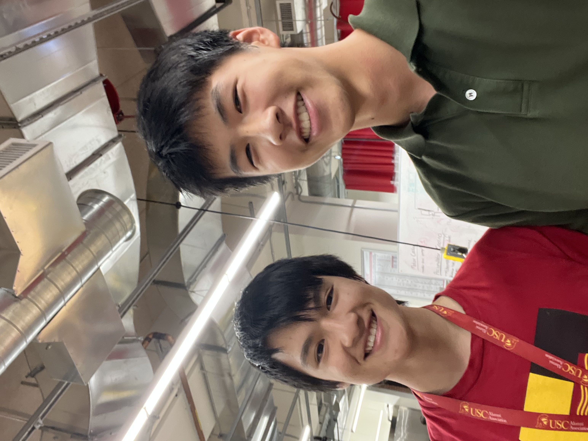
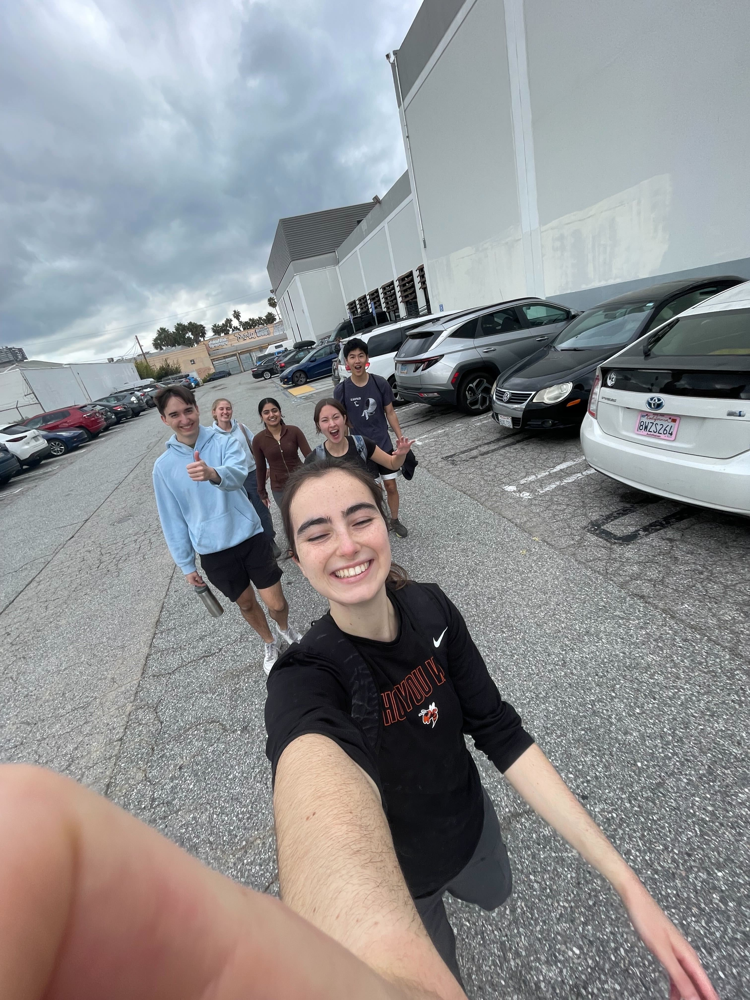

Clubs were always going to be a main focus. Because my sister went to USC before I did, she gave me all the information about different clubs to look out for and apply to. I applied to multiple clubs during my first semester, but unfortunately, I did not make the cutoff for any of them. I was heartbroken, but things happen for a reason. I joined a club called FSAE Electric which designs and builds an electric racecar. This club had no application process and accepted everyone. I was immediately thrown off the deep end and got straight to work, learning how to use industry-standard protocols like CAN messaging and Github. I was learning the most in my clubs, and it has been the best preparation I could ask for for my academic pursuits.

The one club my sister heavily mentioned was Makers. She told me that the club itself builds interesting things for fun, and the community is supportive. Once I was in, I met a lot of cool people who I knew of but did not have the chance to talk to before. I immediately became closer friends with them and met new people in different grades. I met some awesome people, and without clubs, I would have missed out on awesome opportunities. Random Friday excursions to the rock climbing gym, treks to the science museum to see shuttle docking, and trips to frolic in the snow for the weekend are only the beginning of random things I got to have because of this club. For actual work, I am currently working on an automated monopoly board that moves pieces and plays against you using a reinforcement learning model. I will never have a machine learning class at USC, so it is helpful that I can learn these things outside of class.
